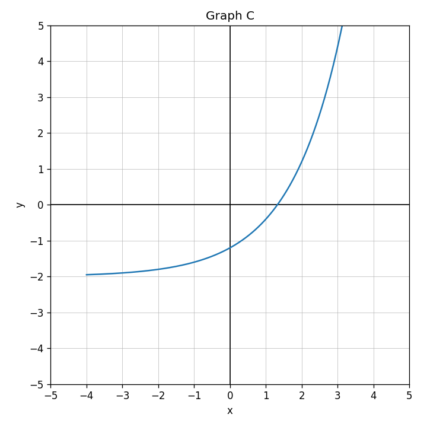
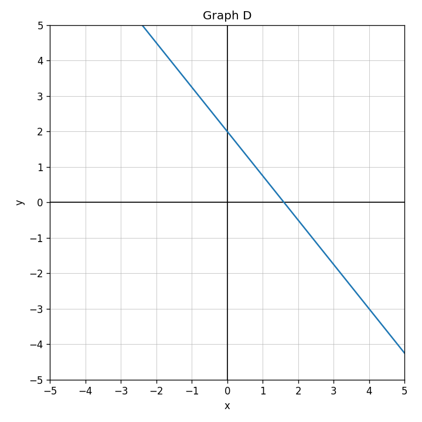
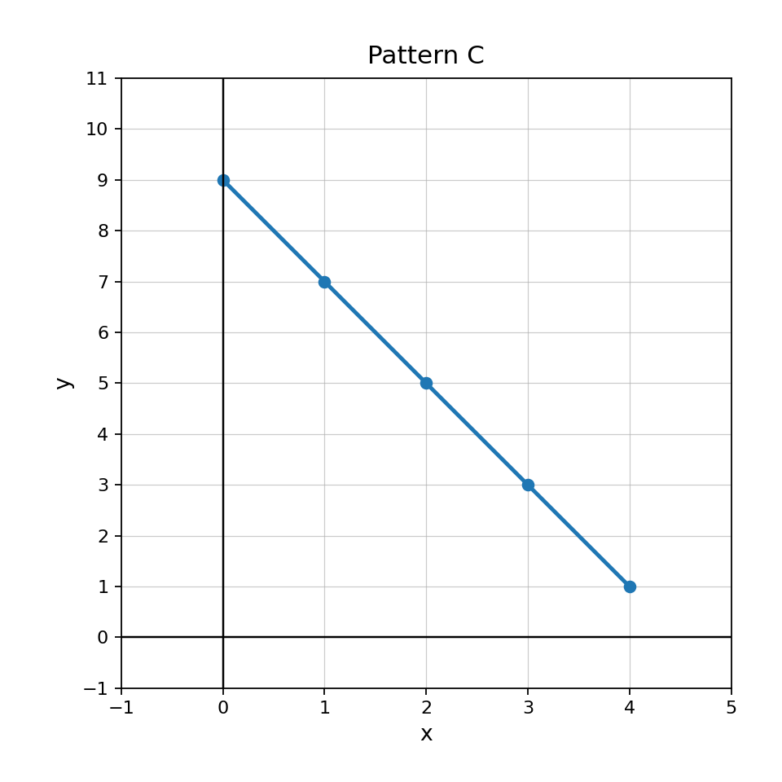

Identify the family shown by Graph C.

Match each representation to a likely family: linear, quadratic, absolute value, or exponential.
A student says Graph D must be exponential because it is decreasing. Critique the claim and identify a better family.

Design two situations: one better modeled by a quadratic function and one better modeled by an absolute value function. Explain how the graph shape would fit each situation.
For $4r-9s+12$, identify one coefficient, one variable, and the constant term.
Simplify: $$10x-3x$$
Rewrite: $$6(a-4)$$
Are $2(x+9)$ and $2x+18$ equivalent?
Simplify completely: $$3(2x+1)+5x-7$$
A school orders $b$ boxes of markers. Each box has $12$ markers, and the school already has $35$ markers. Write an expression for the total number of markers and interpret each part.
Compare two ways to simplify $4(x+3)+2(x+3)$. Which way uses structure more efficiently?
Create three equivalent expressions for the total cost of $x$ notebooks at $3$ dollars each plus $2$ dollars for a folder. At least one expression must use parentheses.
Use Pattern C. What is the constant change in $y$ for each increase of $1$ in $x$?

A linear pattern has Figure 0 equal to $6$ and grows by $7$ each figure. Predict Figure 8.
A student says a table is linear because all outputs are positive. Explain why this reasoning is not enough, then describe what evidence is needed.
Create a graph description and a table for a linear pattern with a negative rate of change. Explain how both representations show the same rate.